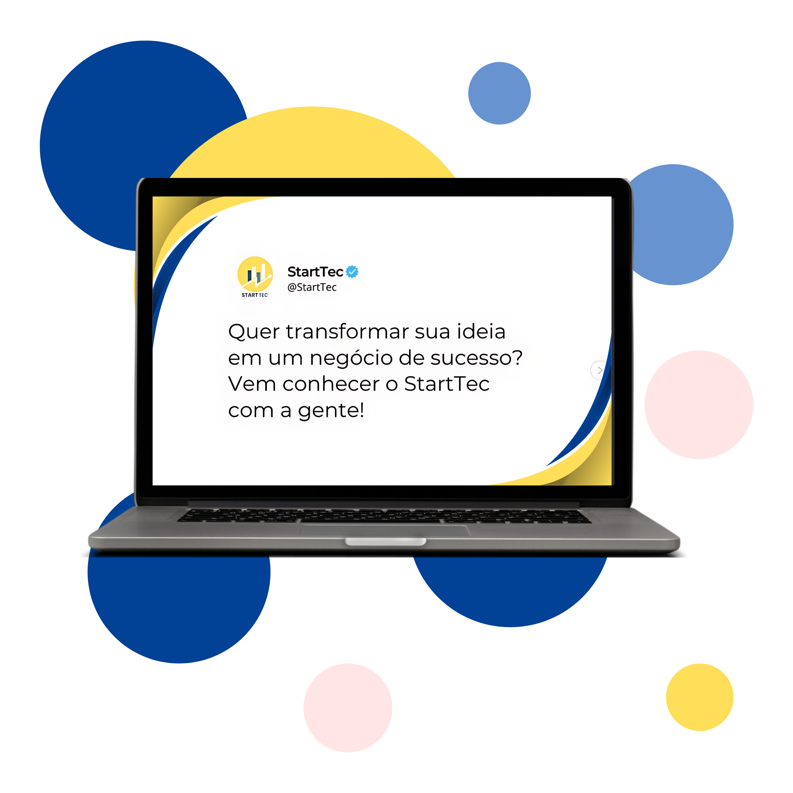
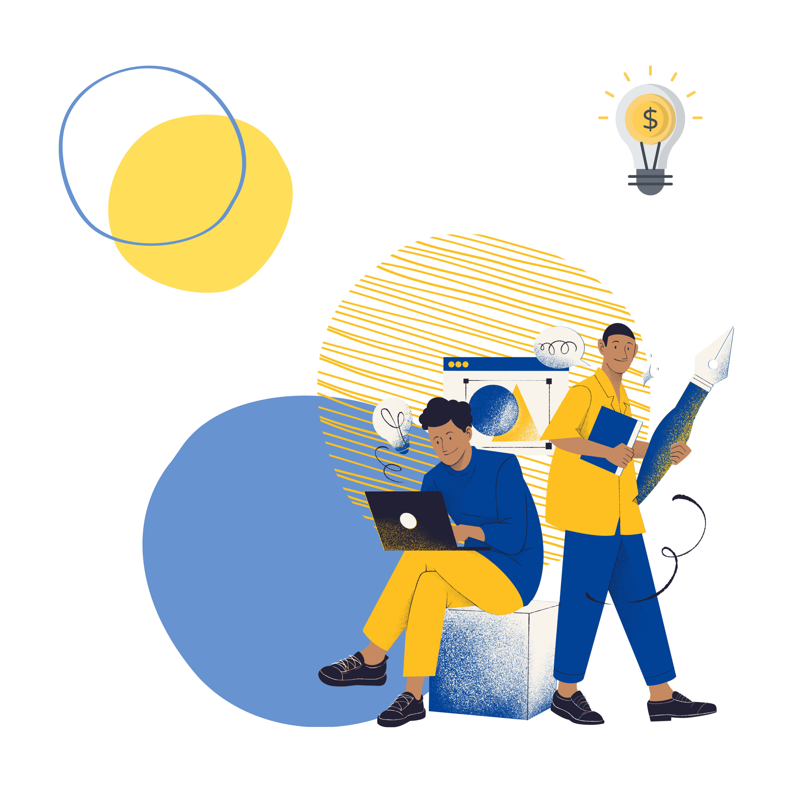

Bem-vindo!
Explore nosso site e abra as portas para um universo de inovação e novas oportunidades para o seu negócio.
Pequenas empresas, grandes saltos:
quebrando barreiras e criando o futuro moderno hoje.
Transforme ideias em ações:
impulsione sua empresa e conquiste o mercado com inovação e propósito.
StartTec: Transformando pequenas ideias em grandes negócios.

Somos o parceiro ideal para empreendedores de baixa renda que querem inovar, crescer e construir negócios sustentáveis.
A StartTec é a parceira ideal para jovens e adultos de baixa renda que desejam abrir ou expandir suas lojas, físicas ou online. Nosso objetivo é oferecer suporte prático e acessível para que você possa superar desafios, inovar e construir um negócio sustentável. Venha fazer parte de um futuro econômico mais inclusivo!
- Suporte acessível e prático.
- Inovação e sustentabilidade.
- Inclusão econômica.

Colabore para inovar e crescer junto
Na StartTec, unimos forças com empresas que acreditam no poder da inovação e do empreendedorismo para criar um futuro mais inclusivo. Sua empresa pode fazer parte desse movimento!
- Apoio prático e acessível para jovens e adultos de baixa renda.
- Capacitação em práticas sustentáveis para um crescimento responsável.
- Conexões e recursos que transformam ideias em negócios de sucesso.